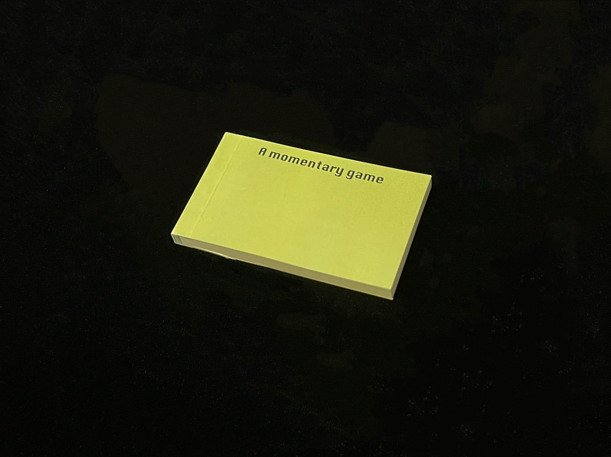
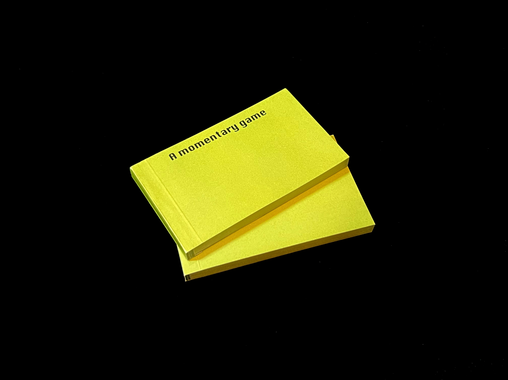
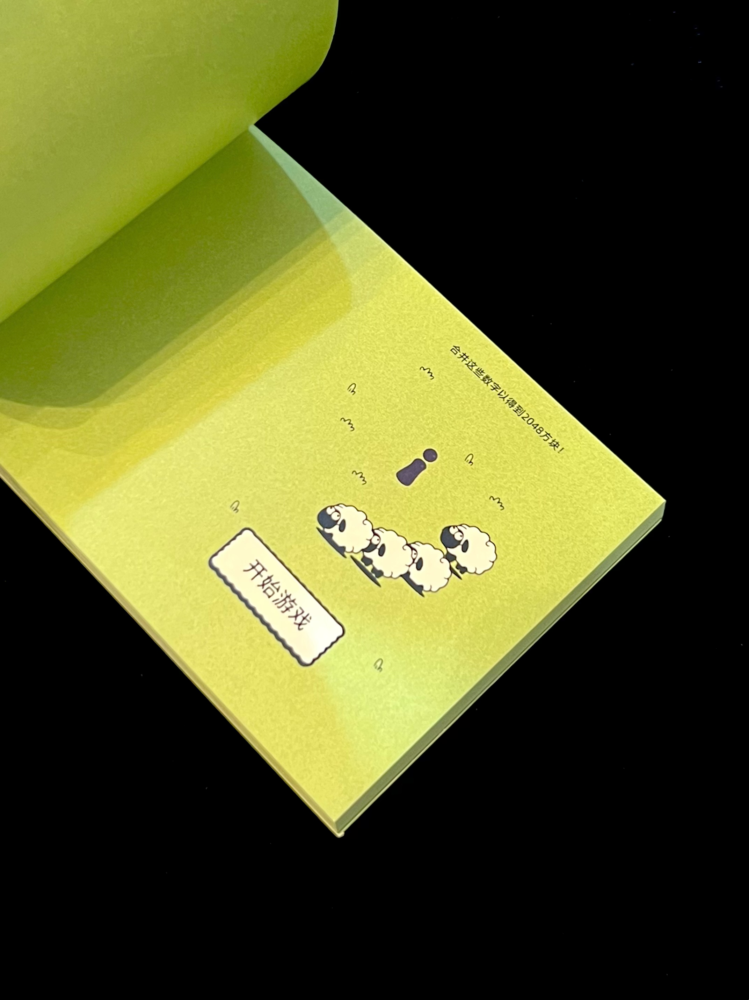
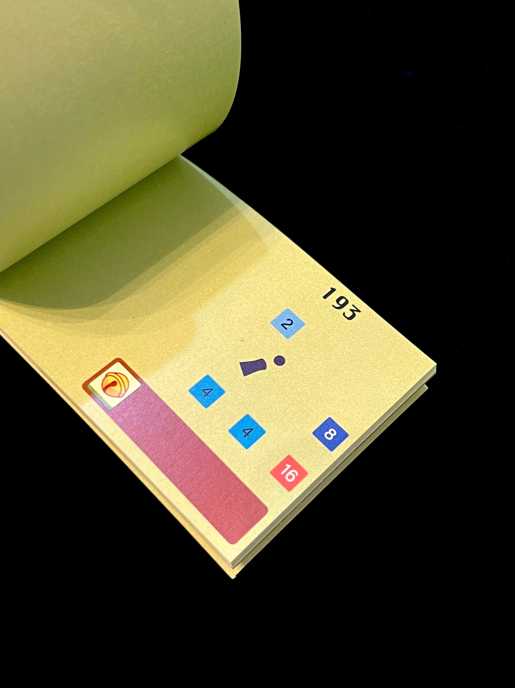
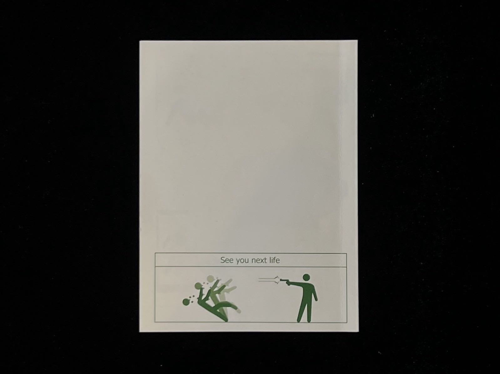
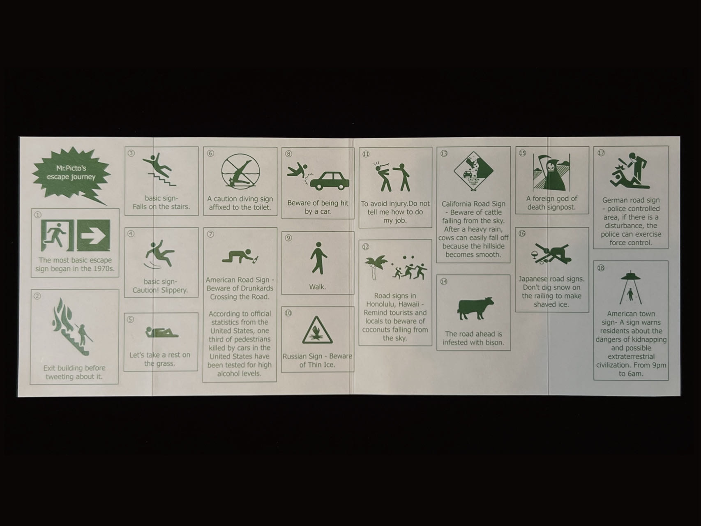
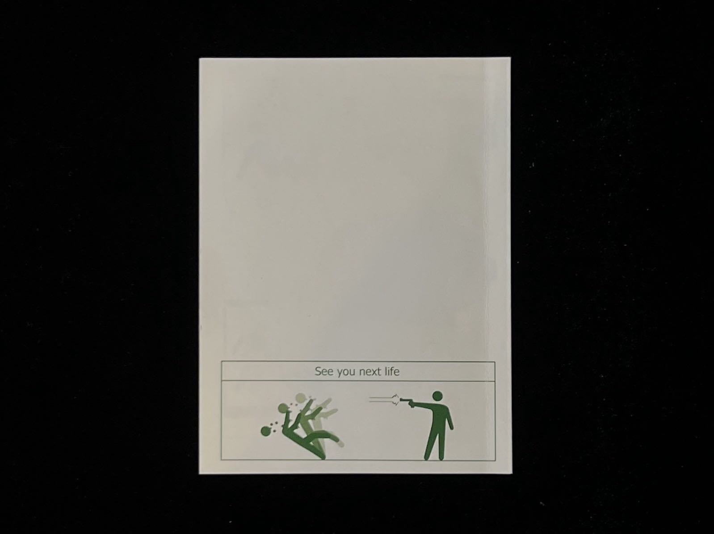
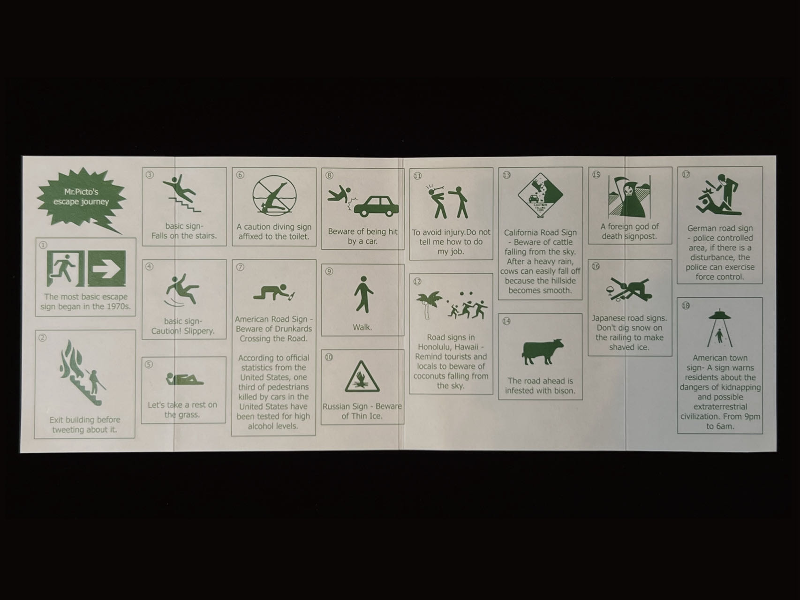
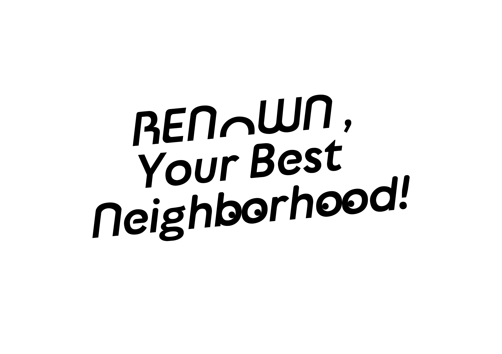
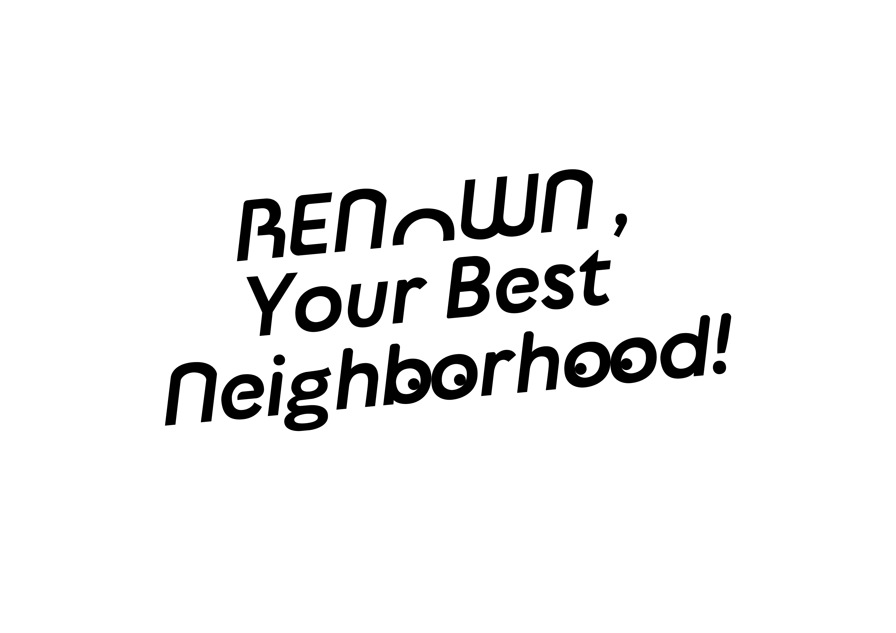

The topic I have chosen is mini program games. With so many people playing mini program games nowadays, I
believe there is a herd effect inside. When you see people around you playing a game, you also want to play
it, even if you don't really care about it. For example, the popular phrase 'sheep like a sheep'
Mini program game recently accelerated the
process of the herd effect,
but now it has disappeared.
So I created a website, when you click on that
me and prompted me to look up
the information.
Mini Program Game
-Herd Behavior
-Heart Flow
-Speedy,Repetitive
Why are simple and easy to use mini pro gram games easily addictive?
There is a flow theory in this. I made it into a long strip that explains how
flow theory and game designers can help you gradually forget about real
time and immerse yourself in the game's operations and reasons.
-Heart Flow
I made a Flipbook by com- bining "Jump", "2048" and"Sheep" together. I
have done many books, the common outcome is failure in the challenge,
and only challenge. Audiences can experience the joy and ten- sion of
taking a shot during the selection process. Mini program games mostly
have the characteristics of repetition, singularity, and addiction. It
may seem like it takes a long time to play challenge. Audiences can
experience the joy and tension of taking a shot during the selection
process.Mini program games mostly have the characteristics of repetition,
singularity, and addiction. It may seem like it takes a long time to play
the game, but in reality, it's just
an instant.






 





 
